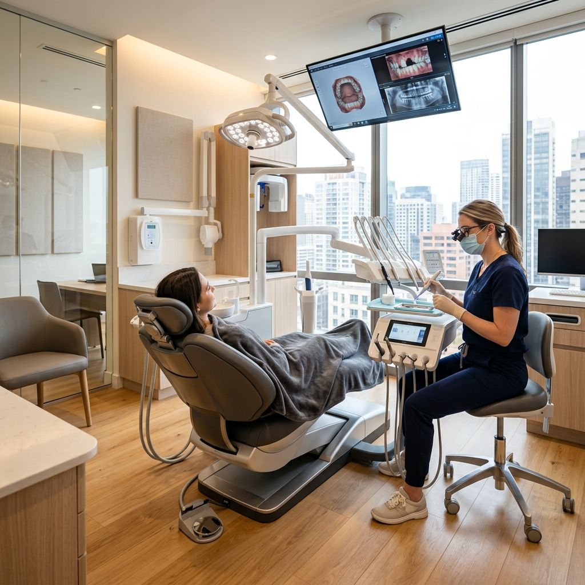

Our Treatments
Comprehensive Dental
Services Under One Roof
At JANS Dental Care, we provide quality dental care for everyone. Whether it's Invisalign, implants, cosmetic dentistry, or pediatric care — our team of specialists has you covered with advanced technology and a compassionate approach.
Specialised Treatments
Years Experience
Sterilisation Standards
Sedation Options
Treatment 01
Teeth Cleaning
The foundation of a lifetime of healthy smiles.
Professional teeth cleaning (prophylaxis) is the most important preventive dental procedure you can schedule. Even with excellent brushing and flossing habits, plaque and tartar build up in areas your toothbrush cannot reach — particularly below the gumline and between teeth. Our hygienists use ultrasonic scalers and precision hand instruments to remove these deposits, polish your enamel, and screen for early signs of cavities, gum disease, and oral cancer.
Key Benefits
- Removes hardened tartar that brushing alone cannot eliminate
- Prevents gum disease, the leading cause of adult tooth loss
- Early detection of cavities, oral cancer, and other issues
- Fresher breath and a noticeably smoother, cleaner feel
How It Works
Comprehensive oral examination and periodontal charting
Ultrasonic scaling to remove tartar above and below the gumline
Fine hand scaling for detailed cleaning of difficult areas
Professional polishing and personalised oral hygiene instruction
Treatment 02
Root Canal Treatment
Save your natural tooth. Eliminate the pain.
Root canal treatment (endodontic therapy) removes infected or inflamed pulp tissue from inside your tooth, cleans and disinfects the root canals, and seals them to prevent reinfection. Modern root canal procedures are virtually painless thanks to advanced anaesthesia and rotary instruments. This treatment saves millions of teeth every year that would otherwise need extraction, preserving your natural smile and bite.
Key Benefits
- Eliminates severe toothache and sensitivity instantly
- Saves your natural tooth — avoiding the need for extraction
- Prevents the spread of infection to neighbouring teeth and bone
- Modern techniques make the procedure nearly painless
How It Works
Digital X-ray and pulp vitality testing to confirm diagnosis
Local anaesthesia administration for a completely pain-free experience
Infected pulp removal, canal shaping, and thorough disinfection
Permanent filling or crown placement to restore full function
Treatment 03
Dental Implants
Permanent, natural-looking tooth replacements.
Dental implants are the gold standard for replacing missing teeth. A titanium post is surgically placed into your jawbone where it fuses naturally over time, creating an incredibly strong foundation for a custom-made crown. Unlike dentures, implants do not slip or shift. They look, feel, and function exactly like your natural teeth — allowing you to eat, speak, and smile with complete confidence for decades.
Key Benefits
- Permanent solution that can last a lifetime with proper care
- Preserves jawbone density and prevents facial sagging
- No adhesives or removal required — functions like a real tooth
- Restores full chewing power for all types of food
How It Works
Comprehensive oral exam with 3D cone-beam CT scan
Surgical placement of the biocompatible titanium implant post
Healing period (3–6 months) for osseointegration with the bone
Abutment fitting and placement of the permanent custom crown
Treatment 04
Braces & Aligners
Align your teeth for a healthier, more confident smile.
Orthodontic braces correct misaligned teeth, overcrowding, overbites, underbites, and crossbites. We offer traditional metal braces, tooth-coloured ceramic braces, and self-ligating systems. Each option is designed to apply gentle, consistent pressure to gradually move your teeth into their optimal position. Proper alignment is not just cosmetic — it improves your bite function, makes cleaning easier, and prevents long-term jaw joint problems.
Key Benefits
- Corrects complex alignment issues that aligners cannot handle
- Multiple options including discreet ceramic and self-ligating types
- Improves bite function and reduces TMJ/jaw pain risks
- Predictable, reliable results for all age groups
How It Works
Orthodontic records: panoramic X-ray, cephalometric analysis, impressions
Custom bracket bonding and initial arch wire placement
Monthly adjustment visits for wire tightening and progress tracking
Debonding, final polishing, and retainer fitting for lasting results
Treatment 05
Teeth Whitening
A brilliantly brighter smile in just one visit.
Professional teeth whitening is a fast, safe, and highly effective way to remove years of staining caused by coffee, tea, wine, tobacco, and natural ageing. Our in-office whitening uses clinical-grade bleaching agents activated by advanced LED light technology to penetrate deep below the enamel surface. The result is a smile that is multiple shades whiter in a single 60-minute appointment — far superior to any over-the-counter product.
Key Benefits
- Results up to 8 shades whiter in a single session
- Professional-grade formula minimises tooth sensitivity
- Even, consistent whitening across all visible teeth
- Results that last 6–12 months with basic maintenance
How It Works
Shade assessment and cleaning to prepare the tooth surface
Protective barrier applied to gums and soft tissue
Clinical whitening gel application with LED light activation
Final shade comparison and take-home maintenance kit provided
Not Sure Which
Treatment You Need?
Book a free consultation and our specialists will evaluate your dental health and recommend the best path forward.